Brief
Julie Bowen is the club director for the local Karori Badminton Club, and she is looking for a website to hold information and resources for this sports club. Julie and I have discussed some key aims for the site and after looking at some UX design principles, we decided to focus on: reviewing the types of users who will be accessing the site and the kind of design and experiences that they expect when they are online, and doing some competition analysis to get a sense of the design style and features of websites that perform similar functions.
User experience planning:
Project Backlog
Link to project backlog boardOnce I started on this project, I began to think about the main tasks and put this board together to help me get a sense of all the things that would need to happen. This is my project backlog board, captured part way through the project.
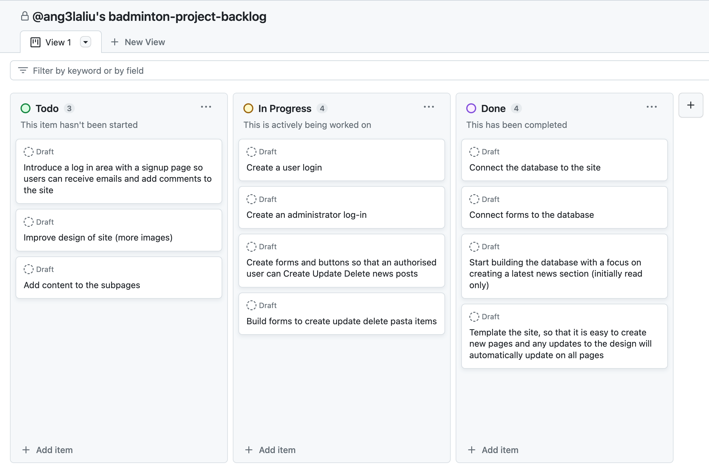Relevant Implications: Describe
Accessibility:
Web accessibility is an essential concept for creating and designing any website. It ensures that users of all abilities are able to access and use the site with ease, using tools provided by their computer. There are certain constructs in coding to make this possible for users; such as alt tags on images, heading tags and the use of em.
Aesthetics:
Aesthetics are important for how a website interacts with the user because the aesthetic ultimately determines if a user ‘likes’ a site. The CRAP method helped me determine how I would implement aesthetics to compliment my website.
Future-proofing:
Future proofing is about whether the website can be kept up to date. Can content be easily changed, old content removed and new content added. Often the end user of the website will not have significant technical knowledge of how the website works. So these users should be able to maintain the website using options that allow them to manage the web-site from the interface. This means having forms and option buttons and these only being available to an authorised user. By building a website that uses a database to store the page content and making options (such as buttons and form pages) available to manage the site content, the website can be continually kept up to date
Functionality:
Functionality can be checked through the process of testing. Under functionality, ensuring that my website performed at its best on all different browsers and user interfaces was essential, and this is typically achieved through regular testing of the digital media product during the design process.
Sprint One
Aim:
To complete a home page design, this includes trialling some different visuals and getting basic introductory content in.

Reflection:
The subtitle text blends into the hero image which does not fulfil the 'C' in crap that stands for contrast, for text to be easy to read it must stand out from tbe background behind it. The hero image is also somewhat overdone, however, this much is sufficient for a first sprint.
Sprint Two
Aim:
To create a navigation bar and add elements to the home page
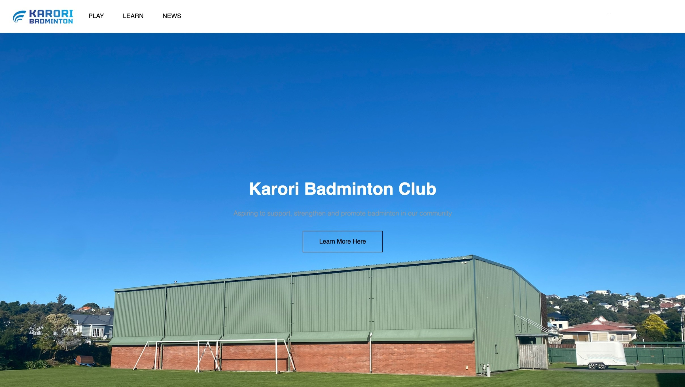 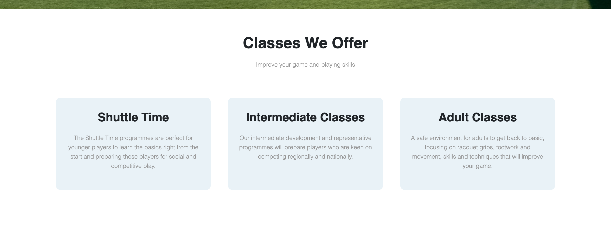Sprint Three
Aim:
To create the Play and Learn subpages
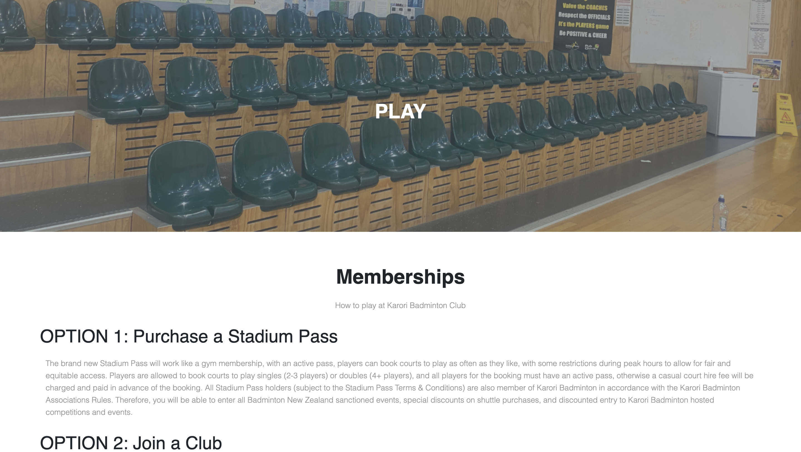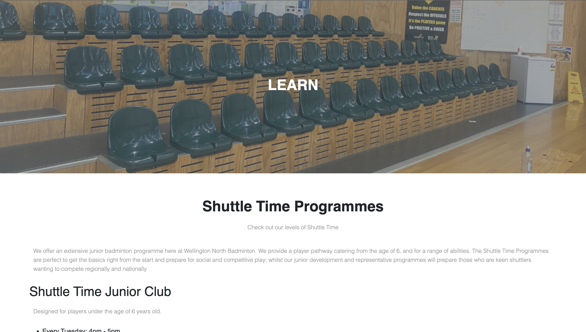
Reflection:
What I have noticed at this stage in my design process is that my pages have very little styling, which leaves the website itself feeling somewhat bare and incomplete. Focusing on the aesthetics and the front end of my site could be a good 'mini' goal alongside my future sprints.
Developing the database and integrating into the Badminton site
Relevant Implications: Describe
Privacy:
There is little to be said about privacy as we have not touched on it much as a topic. The database should not be directly accessible by the user. For example http://127.0.0.1:8000/data should not take us to the data folder. Passwords should be hashed and the collection of a user's personal data should be handled with thought and care. For example, there is no point collecting their address and phone number.
Functionality:
This means that, at it's core, the database should work properly. It should not have errors and the data should be consistent in format. For example, using the SQLite data format "YYYY-MM-DD HH:MM:00" across the whole website. Foreign key references need to be correct, so for example, the correct member is associated with the news post that they made. Functionality can be addressed by creating precise entity relationship diagrams and a sql installer file, so that it is easy to implement small changes and corrections, and by thoroughly testing the database output on the web pages.
Sustainability and Future Proofing:
This means that the database should be easy to maintain. Any corrections to names, titles or dates should only happen in one place in the database, if they need to be used in other tables they should be referenced using foreign keys. For example, the members or users stored in the database; if their names are to be used in another part of the database, such as being associated with posting a news item, there should be a foreign key reference in the news table. This means that if a name is updated or other details are added, then the new name would appear in the news item, without having to make changes anywhere else. Overall, the database tables should be for different 'entities', people, classes, news items, schedule items etc. This also makes it easy to add new tables without altering what is already there.
End user considerations:
The data in the database needs to be queried and presented in a way that caters to the users needs. It should be presented in a clear organised structure and formatted to meet the expectations that users have for a modern website. Forms that allow the user to add, update or delete entries in the database should be simple to use and have validation to help the user avoid entering incorrect or partial information.
Starting design
This is my staring design for a database for my badminton website. The news page will be an important way of keeping people up to date with the latest news and upcoming events. The first priority is to allow authorised users should be able to easily add a news item, and they should also be able to update or delete one. Another useful features of the database will be the ability for non-authorised users to leave comments underneath news items on the website, and also a members table to keep track of the signups from new users.
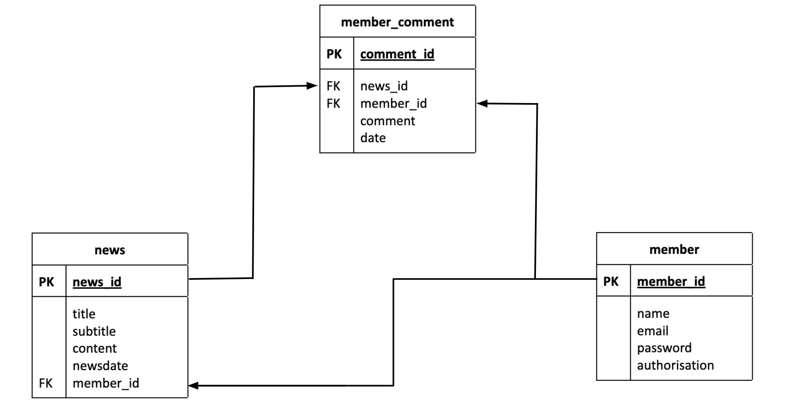Sprint Four
Aim:
To create the database aspect of my website, I will begin with building, running and testing two linked tables; a 'news' table and a 'member' table. The data plan for these tables is below:
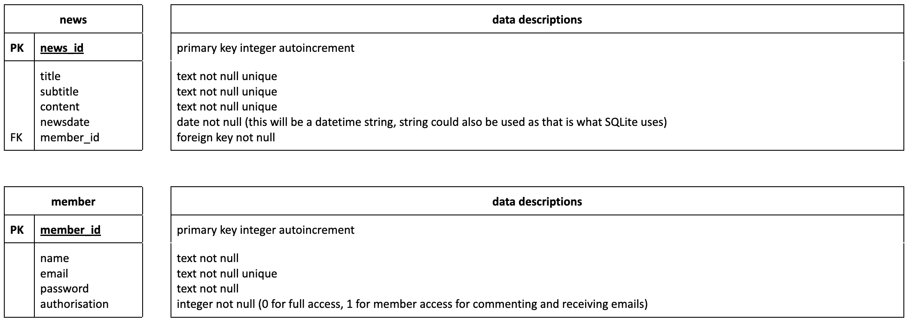Screenshots of the sql installer file and a test in a Python test file
Reflection:
Now that I have the sql installer file running, I can add to it and reinstall the database when necessary which will be very useful during this testing stage. After a series of false starts and failed attempts, I got the query to run and print out, using a testing file. This means I can work out and test a query before implementing in the flask server file.
Sprint Five
Aim:
To build the news page on my website, connect it with the database and load in news items to display.
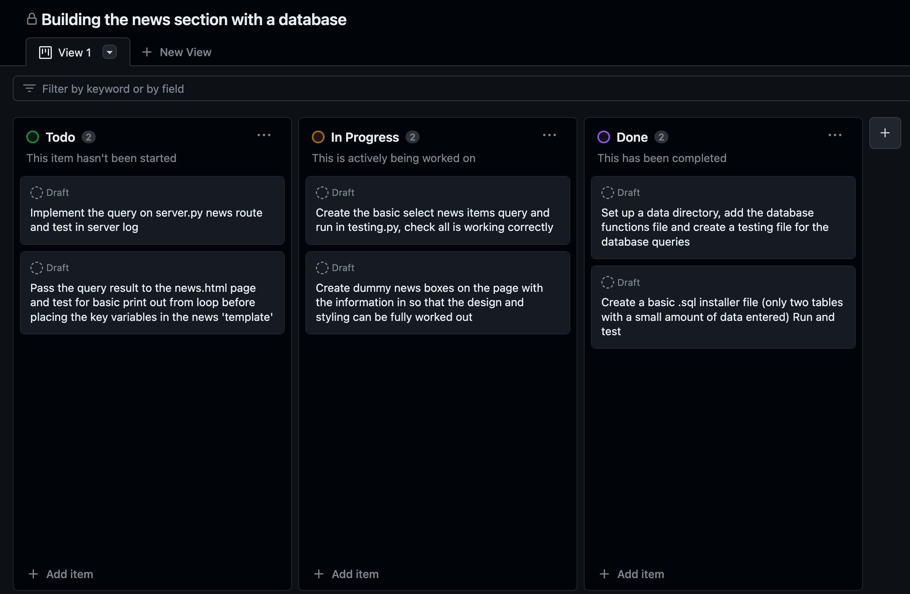This is my build for the news page, currently with very minimal styling. The buttons are not functional, but are part of the design as an authorised user will need these.
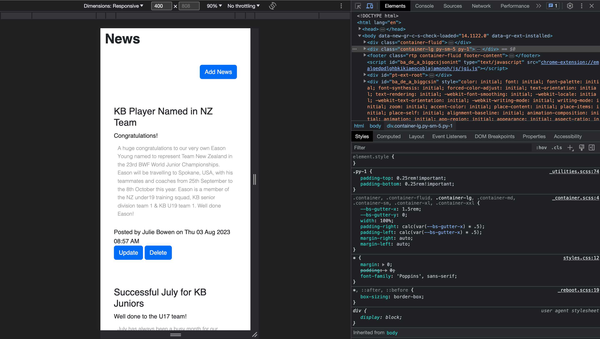Implementing the code to read from the database and output onto the page
server.py news route code
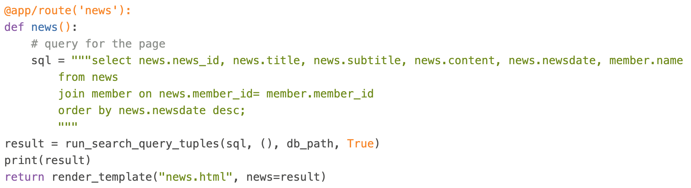news.html code
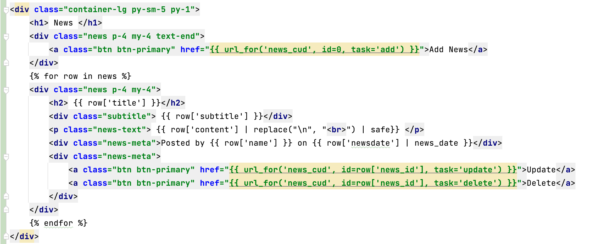More testing
Printing outputs from the query (row factory objects) as a test
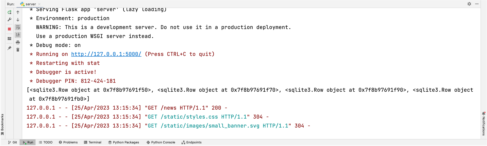News items on the webpage
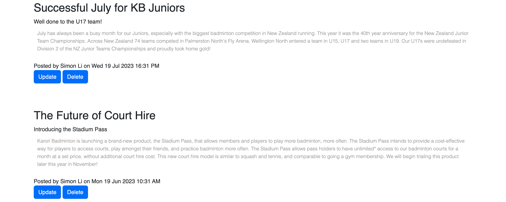Sprint Six
Aim:
Design and build a form to go with the news page so that an authorised user can Create, Update, Delete news items. There are already buttons for each of these functions in place but the task now it to make them functional.
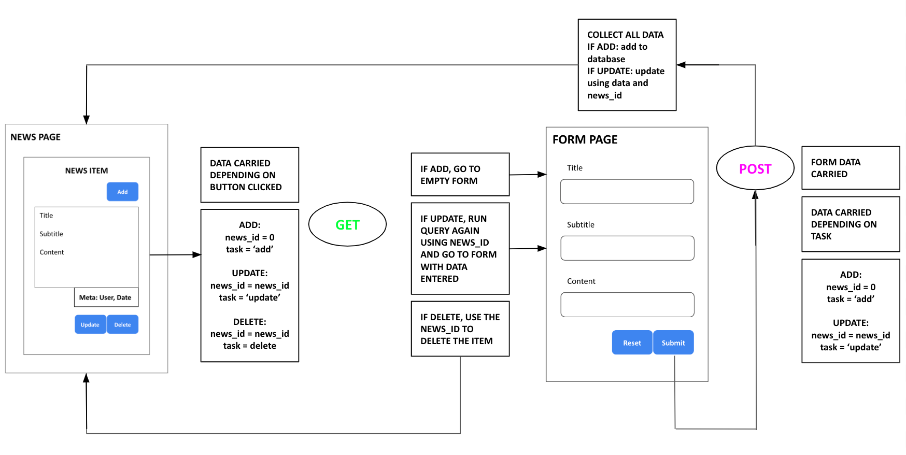Sprint Seven
Aim:
To build the login and make it functional as well as restrict unauthorised users from making major changes to the news site.
Printing outputs from the query (row factory objects) as a test
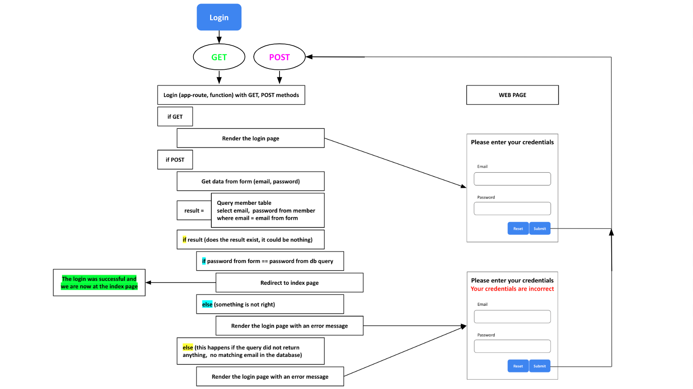Login page

Testing the Add news, Update and Delete buttons with the Login
Reflection:
Realistically, the testing video above should have been filmed in Sprint Six to properly test the Add, Update and Delete buttons, however, I had already moved onto designing the login function before I was able to capture any evidence of trialling. This is the final sprint for the databases stage of my website and, unfortunately, I did not get around to creating a function for users to leave comments under news items - this is due to my poor management of time. Although, this could be seen as more accurate to other sports websites in real life that also do not have the option for users to comment, it's typically more reserved for their social media platforms. Another minor issue I would like to address is that the error message on the login page, "Your credentials are incorrect", is in plain black like the rest of the surrounding text. The lack of emphasis on the text is not helpful in assisting users with recognising and recovering from the error. In the future, it could be worth making a simple edit (i.e. such as making the text red) to place more emphasis on the error and make it a bit more obvious to the user. It would have also been interesting to create a table for lessons and classes, however, it would have been an unrealistic goal given the time.
Relevant Implications: Address
Privacy:
The database is not accessible on http://127.0.0.1:8000/data, this has been tested and the result is a page not found error. The main piece of personal information requested of the user, apart from their name, is their email. I have not asked for phone number or address as this is unnecessary and so the database is storing the minimum of amount sensitive information we need. It would be good to hash the passwords, and that could be a further enhancement that could be added in the future.
Functionality:
The database has been tested regularly throughout the whole development process. By running test queries and using the data table viewer, I have checked that data such as dates and names are patterned and have a consistent format. Each piece of data appears only once in the database, for example a member's name. If it is required in other parts of the database, such as associating a member name with a news item, this is done using foreign keys. The sql installer file has helped me set up the database and I feel confident using it to make small changes and when rebuilding the database during the development process. I have made data fields unique wherever possible and not null as this means any repeated entries or missed fields are picked up quickly during development.
Sustainability and Future Proofing:
The relational design means that it is easy to add new features, such as comments and likes, as this would mean adding in a related table without having to change any pre-existing tables. Using foreign keys means that any updates, for example changing a member name or email, would only need to happen once and any use of it in other queries, such as for a comment or news item, would automatically update.
End user considerations:
The information in the database is managed and displayed through a website. This means that the data users read is presented in an accessible way that is styled in a manner that any user would be familiar with. Updating deleting and adding new data is managed through web forms, which again can be styled and is what the user would be most familiar with. Once a change has been made, the page redirects to the place that the information is displayed, this could be the home/index page, news page, or one of the form pages, so that the user gets immediate confirmation that the action has taken place. Although an error page did not seem appropriate in this design, there are error messages present throughout the forms which help the user recognise and recover their mistakes, such as if the user had entered an invalid email or if their credentials are incorrect when attempting to log in.
BACK TO THE WEBSITE ----->
Relevant Implications: Address
Accessibility:
I have used certain constructs in the coding to make this possible for users. I have added alt tags to all of my images with a short but comprehensive explanation of what is depicted in the photo. This means that if the images do not load, the user can still get an understanding of the image that was there. This also enables users who are blind and use a screen reader to read out the alt tag to understand what the image is without being able to see it. Another construct I used was the heading tags (h1, h2, h3, h4, h5, h6). This helped me structure the site by giving the text a structure. Text inside h1 comes first before h2, then h3 and so on. This allows a user with a screen reader to clearly comprehend the importance and structure of the information on the page. In the future, it would be beneficial to make use of the em feature in html. This would mean that the font will adapt to the user’s screen settings, by setting the font size to 100% in the body and using em measurement to control the proportion of sizing. For example, if I made some text 3em, it means that with a user's special font settings, the text will appear 3 times larger than the default size, no matter how small or large the initial font size is.
Aesthetics:
Contrast: I have used subheadings to help break up the information into bite-sized chunks which can easily be
digested. I have used high quality images throughout my website to help draw the users in and create contrast
from the text on the page. It keeps the page interesting and helps to break up information.
Repetition: For the subpages on my site, I created a banner that would repetitively appear at the top of every
page. This visually shows that each page belongs to the one website. The banner is also repeated with the title
of each page so the user know which page they are on.
Alignment & Proximity: Together, these two considerations help the page look simple and clean. The built-in
containers, rows and columns from Bootstrap 5 helped to keep the content in line, with consistent margins and
padding across all areas of text as well as around images. The proximity and alignment also because important
when I decided to include three cards for the three types of badminton classes, one at each age group.
Future-proofing:
My stakeholder, Julie Bowen, the director for Karori Badminton Hall and the person who will maintain the state of the website has no coding experience. Although Julie may need some assistance if she would like to make major changes to the website itself, such as adding a subpage or editing the content, the news page is very sustainable for the average user. Once logged in, Julie and other authorised club members are free to add, update and delete news items on the website which should make up most of the ‘changes’ they will want to make.
Functionality:
The functionality of my final product is overall somewhat questionable when taken down to a smaller screen size, however, I can acknowledge that there are several steps I could and should have taken in order to maximise the functionality of my end product. In the future, it would be essential to; test the appearance of my site on different screens often, make more use of the built-in containers provided by Bootstrap and remember that problems tend to build up quickly if not addressed before continuing onwards in the design process.